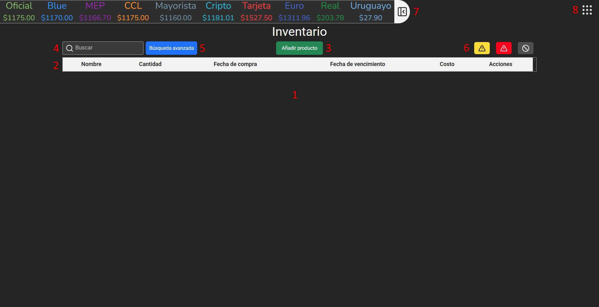

Sistema de Gestión de Inventario
Guía de uso
Referencias
1. Introducción
Este programa es un sistema de gestión de inventario desarrollado para uso en negocios pequeños y medianos. La intención del mismo es permitir al usuario guardar, cargar, modificar y eliminar productos según su necesidad. Estos productos se almacenan localmente en la computadora del usuario. El programa también incluye varias otras cualidades y especificaciones que se detallaran a lo largo de la guía.
En la imágen de arriba se muestra es como el programa se ve al iniciarse por primera vez. Las distintas partes del programa están enumeradas. A continuación se explica cada una.
1. Tabla
Aquí se muestra la tabla que contiene todos los productos que se añaden utilizando el programa. Al iniciar el programa por primera vez, la tabla normalmente estará vacía. Tras añadir un producto, se podra usar la tabla para consultar su:
- Nombre
- Descripción
- Cantidad
- Fecha de compra
- Fecha de vencimiento
- Costo
- Lista de acciones
2. Encabezados de la tabla
Aquí se muestran los encabezados para las distintas columnas de la tabla. Al hacer clic en estos mismos, el usuario puede ordenar la tabla de manera ascendente o descendiente en base a los valores de los productos.
3. Botón para añadir producto
4. Cuadro de búsqueda
Este cuadro de texto le permite al usuario filtrar y cargar los productos de la base de datos de acuerdo a su nombre y descripción. Para más información, consulte la sección de búsqueda y filtrado de productos.
5. Botón de búsqueda avanzada
El botón de búsqueda avanzada abre un menú donde el usuario puede especificar cualquier combinación de datos para filtrar y cargar productos específicos de la base de datos. Para más información, consulte la sección de búsqueda y filtrado de productos.
6. Botones de filtrado según fecha de vencimiento
Los tres botones en pantalla le permiten al usuario filtrar productos según su fecha de vencimiento:
- Entre una y dos semanas para vencer
- Una semana para vencer o menos
- Vencido
7. Contenedor de tipos de cambio
Esta tarjeta retractable contiene los valores de venta en la última hora de los siguientes tipos de cambio:
- Dólar oficial
- Dólar blue
- Dólar MEP (Mercado Electrónico de Pagos)
- Dólar CCL (Contado con Liqui)
- Dólar mayorista
- Dólar cripto (USDC Stablecoin)
- Dólar tarjeta
- Euro oficial
- Real Brasileño oficial
- Peso Uruguayo oficial